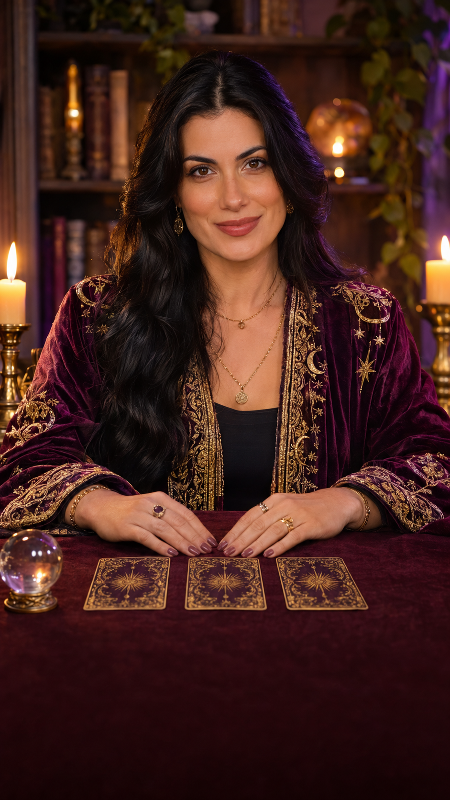

LUNA
CARTAS AO VIVO
PRÉVIA · SEM LIVE CONECTADA
☾
Respire. Escolha sua carta.
UM MOMENTO PARA VOCÊPARTICIPE GRÁTIS
Qual carta chama você?
Comente 1, 2 ou 3 e descubra uma mensagem.
✦ ESCOLHA 1, 2 OU 3 ☾ CHEGOU AGORA? SEJA BEM-VINDO ✧ CURTA SE ESTIVER GOSTANDO ☾ PRESENTES ATIVAM EFEITOS VISUAIS ✦ ESCOLHA 1, 2 OU 3 ☾ CHEGOU AGORA? SEJA BEM-VINDO ✧ CURTA SE ESTIVER GOSTANDO ☾ PRESENTES ATIVAM EFEITOS VISUAIS ✦
♥
QUE BOM TER VOCÊ AQUI